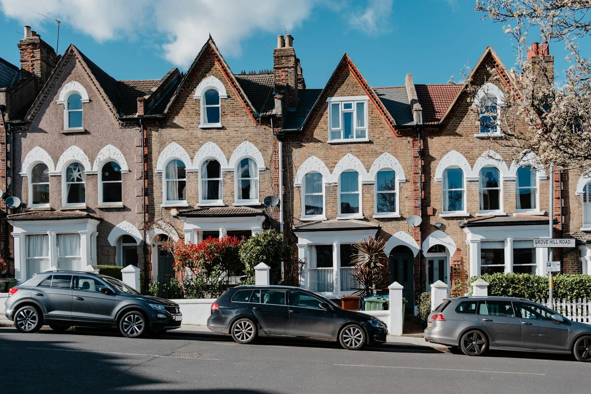

Huerkamp Home Group
Free guide
Association fees, documents, insurance and financing: how to buy a townhome or condo with your eyes open.
Free guide for townhome and condo buyers
Townhomes and condos trade a yard and some maintenance for a monthly association fee and a set of shared rules. Done right, that's a great deal. The difference between a good purchase and a costly one is usually in the association's documents.
This guide shows what to look for. See townhomes, condos and condo buildings for sale. Questions? Call or text us at (612) 502-7653.
Townhome or condo?
With most townhomes you own the unit and often the land under it; with a condo you own the space inside your walls plus a share of the common areas. It affects what you maintain, what you insure and sometimes how you finance.
Roofs, siding, windows, decks, snow removal, lawn care and utilities may or may not be covered. Two homes with the same fee can cover very different things. Get the list in writing.
Rules can limit rentals, pets, parking, grills, exterior changes and even what you can store in the garage. If a rule matters to you, find it in the documents.
The documents to read
Under the Minnesota Common Interest Ownership Act, sellers in most associations must provide a resale disclosure certificate with key facts: fees, any unpaid assessments, pending special assessments, insurance and lawsuits. Read it before you're past your chance to back out.
The reserve fund pays for big future repairs like roofs and parking lots. If reserves are thin, owners may face special assessments or sharp fee increases. Ask whether a reserve study has been done.
Board minutes from the last year often mention coming projects, disputes and problems before they show up in the budget.
Litigation or large claims can affect fees, insurance and whether lenders will finance units in the association.
Money matters
Lenders include association dues when they figure what you can afford, and so should you. A lower price with a high fee can cost more each month than a higher price with a low one.
Even well-run associations sometimes need a one-time payment from owners for a big project. Ask whether any are planned, and look at how often they have happened before.
Condo owners typically need an HO-6 policy to cover the inside of the unit, belongings and liability, alongside the association's master policy. Townhome coverage depends on what the association insures. Ask your agent and insurer to compare the master policy with yours.
Financing and buying
For FHA financing, a condo project generally needs FHA approval (or a single-unit approval). Conventional lenders review the project too, looking at things like owner occupancy, reserves and litigation. Ask your lender early.
In a condo, the building's roof, elevator, parking garage and windows matter as much as your unit. Ask when they were last replaced and whether reserves cover the next ones.
An inspector can check your unit's systems and visible common elements. You won't control repairs to common areas, but you will help pay for them, so it's worth knowing their condition.
Rental limits, financing approval and fee levels affect how easily you can sell later. A well-run association with healthy reserves helps your home hold its value.
Ready when you are
Huerkamp Home Group has helped buyers and sellers across the Twin Cities since 2002, and has been a Dave Ramsey Endorsed Local Provider for more than 15 years.
Sources
Photos: Samuel Regan-Asante (cover), Bruce Barrow and Vitali Holstinin on Unsplash. General information, not legal, tax or lending advice. Rules and programs change; confirm details with your lender, title company, tax adviser or attorney. Huerkamp Home Group is a team of licensed REALTORS® with Keller Williams Preferred Realty. Equal Housing Opportunity.